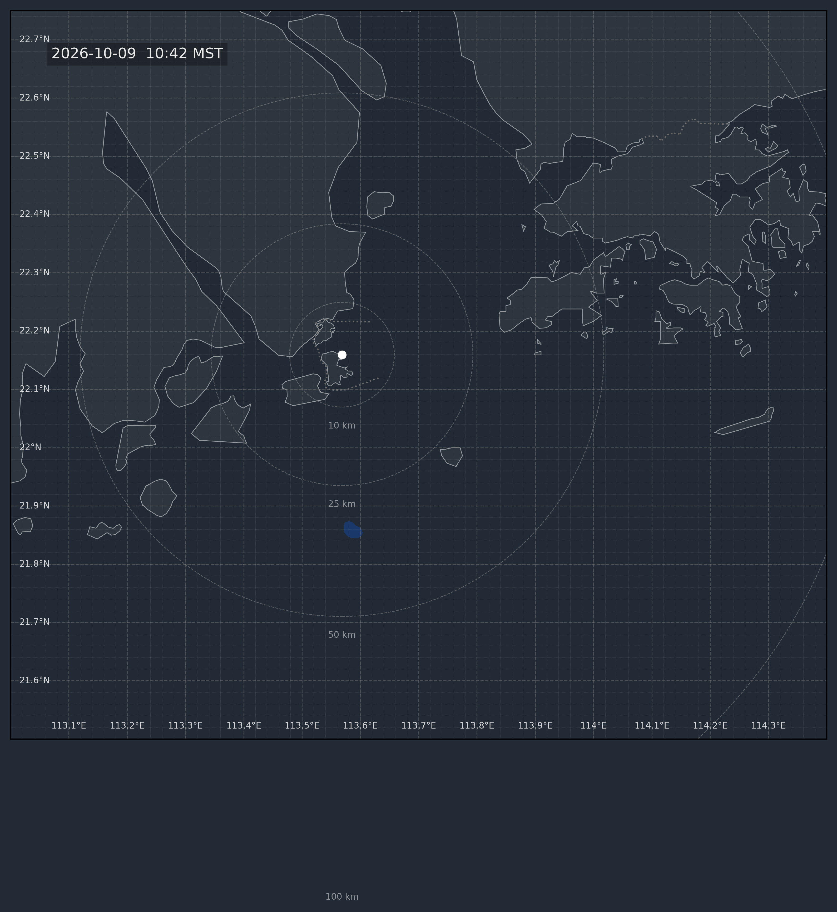

氣象圖表分析與輸出中心 v2.1.0
載入中...
農曆計算中...
正在載入氣象圖表與雨量數據...
01 / 高低空數值天氣預報圖
數據每6小時自動更新
02 / 雷達回波動態播放
實時降雨雷達動畫
雷達回波圖 (第 1 / 4 幀)
狀態：已暫停

03 / 澳門各區預測雨量檢測 (HKO 網格雨量)
來源：香港天文台 Gridded Rainfall
雨量警戒級別：
≥ 20mm 黃色
≥ 50mm 紅色
≥ 80mm 黑色
≥ 100mm 紫色
| 站點名稱 (代號) | 經緯度 (Lat, Lon) | 網格檢測雨量 (mm) | 預警狀態 |
|---|---|---|---|
| 正在讀取網格雨量 CSV 數據... | |||
自動比對距離各站點最近之 HKO 雷達網格雨量點。